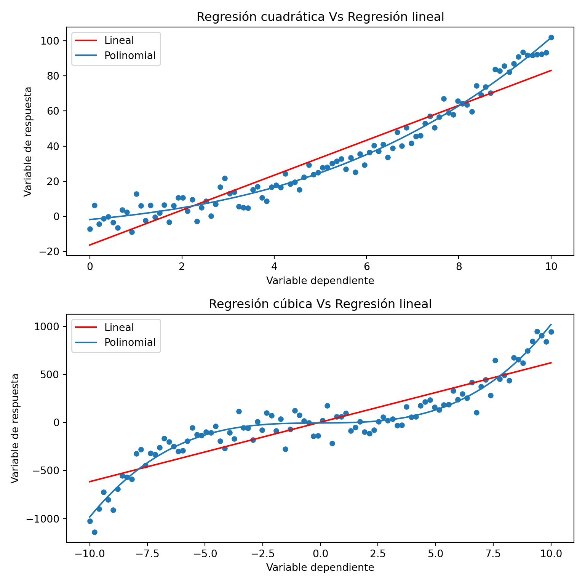
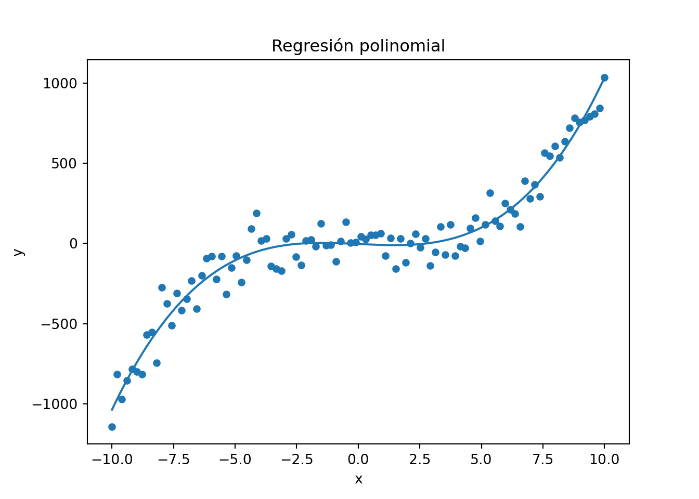
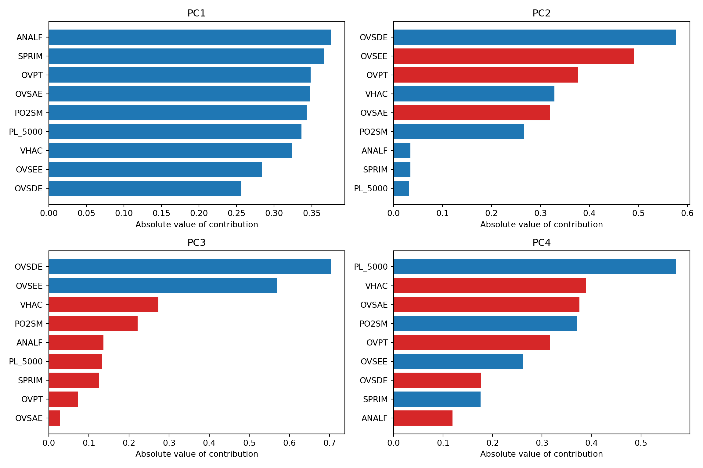
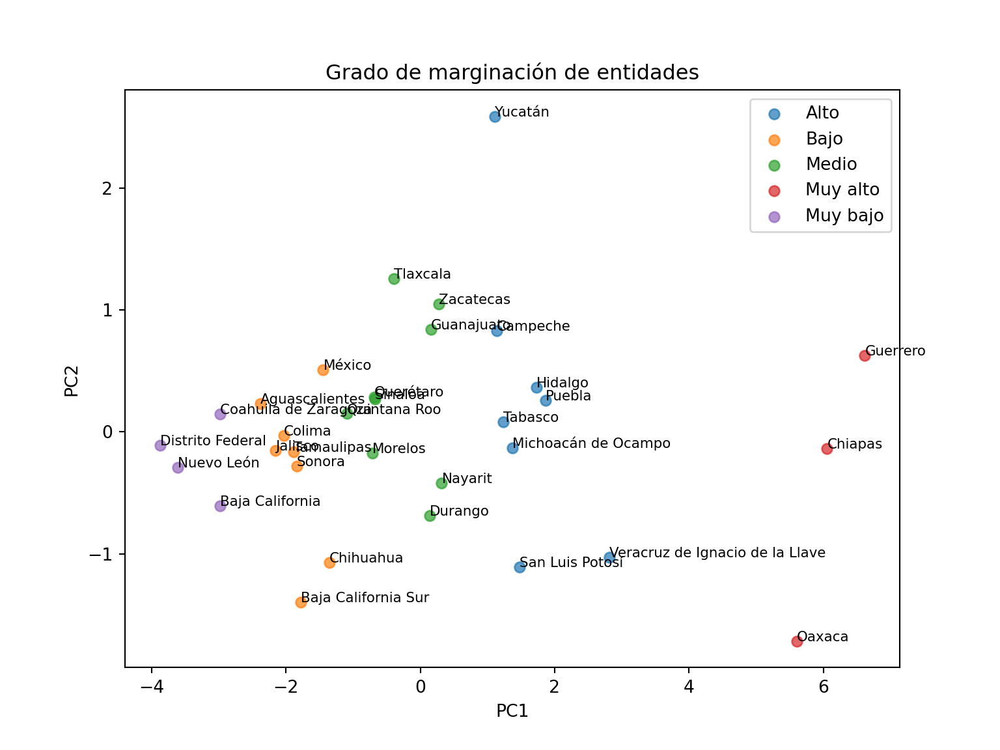
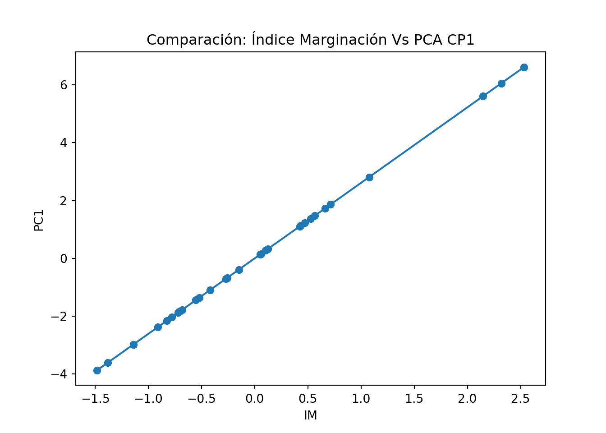
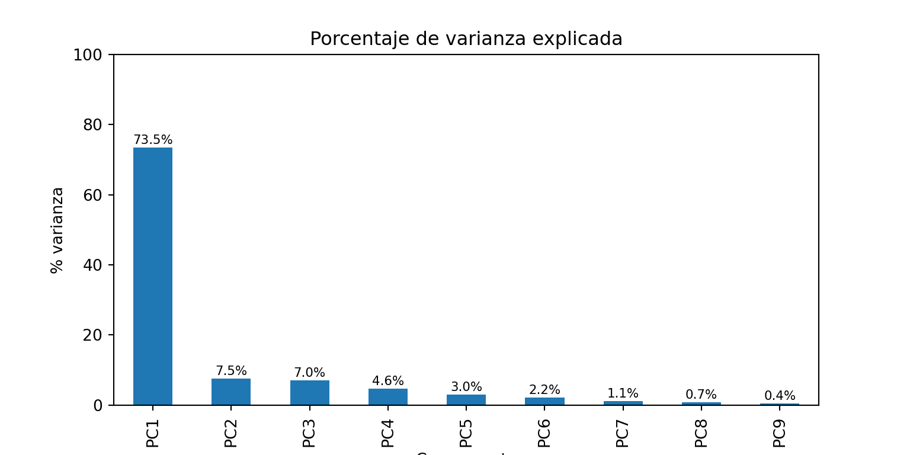
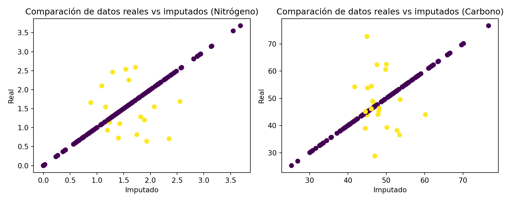

Capítulo 2 Feature Engineering
2.1 Regresión polinomial
Es común encontrar en la literatura este tema junto con la regresión múltiple, sin embargo, el alcance de esta transformación va a más allá de la regresión lineal, por lo que estudiaremos este tema como parte de la ingeniería de variables y no como un modelo lineal exclusivamente.
El objetivo de la transformación polinomial dentro de la ingeniería de variables es crear nuevas variables que puedan explicar la relación entre la variable de respuesta y explicativa a través de un polinomio de grado k.
En el siguiente gráfico se representa mediante una línea roja a la regresión lineal y mediante una curva azul al polinomio que relaciona a las variables independiente y dependiente.

Es evidente que existe un mejor ajuste cuando se considera un polinomio de grado k en vez de la componente lineal. Este método ofrece mayor flexibilidad para el ajuste de un modelo. Será importante mediar posteriormente entre el sesgo y la varianza de forma que podamos tener un mejor ajuste sin caer en el sobreajuste. La fórmula que expresa la relación entre variable de respuesta y explicativas es ahora:
\[Y_i \sim X_1 + X_1^2\]
Es importante mencionar que cuando se ajusta un modelo polinomial de segundo orden, se deben mantener ambas variables en el model (la original y la cuadrática). Cuando se tenga un modelo polinomial de grado k, se deberán conservar los k elementos que componen el polinomio:
\[Y\sim X_1+X_1^2 + ... + X_1^k\]
Estas transformaciones son posibles realizarlas a múltiples variables que conforman el conjunto de datos que sirve de insumo para el modelo. A través de los pasos secuenciales de un Pipeline podemos integrar esta tarea con PolynomialFeatures. Veamos un ejemplo:
n = 100
rng = np.random.default_rng(12345)
original_data = pd.DataFrame({"x": np.linspace(-10, 10, n)})
original_data["y"] = original_data["x"] ** 3 + rng.normal(0, 100, n)
poly_model = Pipeline(
[
("poly", PolynomialFeatures(degree=3, include_bias=False)),
("lm", LinearRegression()),
]
)
poly_model.fit(original_data[["x"]], original_data["y"])Pipeline(steps=[('poly', PolynomialFeatures(degree=3, include_bias=False)),
('lm', LinearRegression())])In a Jupyter environment, please rerun this cell to show the HTML representation or trust the notebook. On GitHub, the HTML representation is unable to render, please try loading this page with nbviewer.org.
Pipeline(steps=[('poly', PolynomialFeatures(degree=3, include_bias=False)),
('lm', LinearRegression())])PolynomialFeatures(degree=3, include_bias=False)
LinearRegression()
poly_features = poly_model.named_steps["poly"].transform(original_data[["x"]])
poly_recipe = pd.DataFrame(poly_features, columns=["x_poly_1", "x_poly_2", "x_poly_3"])
poly_recipe["y"] = original_data["y"].to_numpy()
display(poly_recipe.head())## x_poly_1 x_poly_2 x_poly_3 y
## 0 -10.000000 100.000000 -1000.000000 -1142.382504
## 1 -9.797980 96.000408 -940.610059 -814.237214
## 2 -9.595960 92.082441 -883.619379 -970.685553
## 3 -9.393939 88.246097 -828.978490 -854.895814
## 4 -9.191919 84.491378 -776.637923 -784.172254coeficientes = pd.Series(
np.r_[poly_model.named_steps["lm"].intercept_, poly_model.named_steps["lm"].coef_],
index=["intercept", "x_poly_1", "x_poly_2", "x_poly_3"],
)
display(coeficientes)## intercept -3.511736
## x_poly_1 -7.251514
## x_poly_2 0.020318
## x_poly_3 1.107439
## dtype: float64
grid = pd.DataFrame({"x": np.linspace(-10, 10, 200)})
plt.scatter(original_data["x"], original_data["y"], s=20)
plt.plot(grid["x"], poly_model.predict(grid), color="tab:blue")
plt.title("Regresión polinomial")
plt.xlabel("x")
plt.ylabel("y")
En el ejemplo anterior puede mostrarse que es a través de la ponderación de los términos polinomiales que se logra estimar a la variable de respuesta Y.
Este mismo procedimiento puede usarse en la receta de la ingeniería de datos para realizar la predicción de una variable de respuesta mediante cualquier otro algoritmo predictivo.
2.2 Análisis de Componentes Principales
El análisis PCA (por sus siglas en inglés) es una técnica de reducción de dimensión útil tanto para el proceso de análisis exploratorio, el inferencial y predictivo. Es una técnica ampliamente usada en muchos estudios, pues permite sintetizar la información relevante y desechar aquello que no aporta tanto. Es particularmente útil en el caso de conjuntos de datos “amplios” en donde las variables están correlacionadas entre sí y donde se tienen muchas variables para cada observación.
En los conjuntos de datos donde hay muchas variables presentes, no es fácil trazar los datos en su formato original, lo que dificulta tener una idea de las tendencias presentes en ellos. PCA permite ver la estructura general de los datos, identificando qué observaciones son similares entre sí y cuáles son diferentes. Esto puede permitirnos identificar grupos de muestras que son similares y determinar qué variables hacen a un grupo diferente de otro.
La idea detrás de esta técnica es la siguiente:
- Se desean crear nuevas variables llamadas Componentes Principales, las cuales son creadas como combinación lineal (transformación lineal) de las variables originales, por lo que cada una de las variables nuevas contiene parcialmente información de todas las variables originales.
\[Z_1 = a_{11}X_1 +a_{12}X_2 + ... + a_{1p}X_p\] \[Z_2 = a_{21}X_1 +a_{22}X_2 + ... + a_{2p}X_p\] \[...\] \[Z_p = a_{p1}X_1 +a_{p2}X_2 + ... + a_{pp}X_p\]
- Se desea que la primer componente principal capture la mayor varianza posible de todo el conjunto de datos.
\[\forall i \in 2,...,p \quad Var(Z_1)>Var(Z_i)\]
- La segunda componente principal deberá SER INDEPENDIENTE de la primera y deberá abarcar la mayor varianza posible del restante. Esta condición se debe cumplir para toda componente i, de tal forma que las nuevas componentes creadas son independientes entre sí y acumulan la mayor proporción de varianza en las primeras de ellas, dejando la mínima proporción de varianza a las últimas componentes.
\[Z_1 \perp\!\!\!\perp Z_2 \quad \& \quad Var(Z_1)>Var(Z_2)>Var(Z_i)\]
- El punto anterior permite desechar unas cuantas componentes (las últimas) sin perder mucha varianza.
¡¡ RECORDAR !!
A través de CPA se logra retener la mayor cantidad de varianza útil pero usando menos componentes que el número de variables originales.
Para que este proceso sea efectivo, debe existir ALTA correlación entre las variables originales.
Cuando muchas variables se correlacionan entre sí, todas contribuirán fuertemente al mismo componente principal. Cada componente principal suma un cierto porcentaje de la variación total en el conjunto de datos. Cuando sus variables iniciales estén fuertemente correlacionadas entre sí y podrá aproximar la mayor parte de la complejidad de su conjunto de datos con solo unos pocos componentes principales.
Agregar componentes adicionales hace que la estimación del conjunto de datos total sea más precisa, pero también más difícil de manejar.
2.2.1 Eigenvalores y eigenvectores
Los vectores propios y los valores propios vienen en pares: cada vector propio tiene un valor propio correspondiente. Los vectores propios son la ponderación que permite crear la combinación lineal de las variables para conformar cada componente principal, mientras que el valor propio es la varianza asociada a cada componente principal. Desde un punto de vista geométrico, el eigenvector es la dirección del vector determinado por la componente principal y el eigenvalor es la magnitud de dicho vector.
El valor propio de una componente es la varianza de este.
La suma acumulada de los primeros \(j\) eigenvalores representa la varianza acumulada de las primeras \(j\) componentes principales
El número de valores propios y vectores propios que existe es igual al número de dimensiones que tiene el conjunto de datos.
2.2.2 Implementación en Python
from sklearn.decomposition import PCA
from sklearn.preprocessing import StandardScaler
from dsml_utils import load_margin_index
indice_marg = load_margin_index("data/IMEF_2010.dbf")
indice_marg.info()## <class 'pandas.core.frame.DataFrame'>
## RangeIndex: 32 entries, 0 to 31
## Data columns (total 16 columns):
## # Column Non-Null Count Dtype
## --- ------ -------------- -----
## 0 CVE_ENT 32 non-null object
## 1 AÑO 32 non-null int64
## 2 POB_TOT 32 non-null int64
## 3 ANALF 32 non-null float64
## 4 SPRIM 32 non-null float64
## 5 OVSDE 32 non-null float64
## 6 OVSEE 32 non-null float64
## 7 OVSAE 32 non-null float64
## 8 VHAC 32 non-null float64
## 9 OVPT 32 non-null float64
## 10 PL_5000 32 non-null float64
## 11 PO2SM 32 non-null float64
## 12 IM 32 non-null float64
## 13 GM 32 non-null object
## 14 LUGAR 32 non-null int64
## 15 NOM_ENT 32 non-null object
## dtypes: float64(10), int64(3), object(3)
## memory usage: 4.1+ KBindice_marg["GM"].value_counts()## GM
## Medio 9
## Bajo 8
## Alto 8
## Muy bajo 4
## Muy alto 3
## Name: count, dtype: int64pca_features = ["ANALF", "SPRIM", "OVSDE", "OVSEE", "OVSAE", "VHAC", "OVPT", "PL_5000", "PO2SM"]
scaler = StandardScaler()
X_pca = scaler.fit_transform(indice_marg[pca_features])
pca = PCA(n_components=9, random_state=123)
pca_scores = pca.fit_transform(X_pca)
pca_recipe = pd.concat(
[
indice_marg[["IM", "NOM_ENT", "GM"]].reset_index(drop=True),
pd.DataFrame(pca_scores, columns=[f"PC{i}" for i in range(1, 10)]),
],
axis=1,
)
pca_recipe.head()## IM NOM_ENT GM ... PC7 PC8 PC9
## 0 -0.910861 Aguascalientes Bajo ... 0.135596 0.031169 0.057180
## 1 -1.140149 Baja California Muy bajo ... -0.073926 -0.042614 0.003122
## 2 -0.681287 Baja California Sur Bajo ... -0.225205 0.039793 -0.035731
## 3 0.433571 Campeche Alto ... -0.297280 -0.373325 0.023337
## 4 -1.140004 Coahuila de Zaragoza Muy bajo ... 0.277471 -0.072466 0.083981
##
## [5 rows x 12 columns]Veamos los pasos de esta receta:
Primero, debemos decirle a la receta qué datos se usan para predecir la variable de respuesta.
Se actualiza el rol de las variables nombre de entidad y grado de marginación con la función
NOM_ENT, ya que es una variable que queremos mantener por conveniencia como identificador de filas, pero no son un predictor ni variable de respuesta.Necesitamos centrar y escalar los predictores numéricos, porque estamos a punto de implementar PCA.
Finalmente, usamos
PCA()para realizar el análisis de componentes principales.La función
prep()es la que realiza toda la preparación de la receta.
Una vez que hayamos hecho eso, podremos explorar los resultados del PCA. Comencemos por ver cómo resultó el PCA. Podemos ordenar los resultados mediante la función tidy(), incluido el paso de PCA, que es el segundo paso. Luego hagamos una visualización para ver cómo se ven los componentes.
A continuación se muestran la desviación estándar, porcentaje de varianza y porcentaje de varianza acumulada que aporta cada componente principal.
pca_summary = pd.DataFrame(
{
"component": [f"PC{i}" for i in range(1, 10)],
"std": np.sqrt(pca.explained_variance_),
"variance_ratio": pca.explained_variance_ratio_,
"cumulative_variance": np.cumsum(pca.explained_variance_ratio_),
}
)
pca_summary## component std variance_ratio cumulative_variance
## 0 PC1 2.613184 0.735037 0.735037
## 1 PC2 0.833984 0.074866 0.809903
## 2 PC3 0.804701 0.069701 0.879604
## 3 PC4 0.656747 0.046426 0.926030
## 4 PC5 0.529347 0.030161 0.956191
## 5 PC6 0.447737 0.021578 0.977770
## 6 PC7 0.323057 0.011234 0.989003
## 7 PC8 0.260703 0.007316 0.996319
## 8 PC9 0.184921 0.003681 1.000000Podemos observar que en la primera componente principal, las \(9\) variables que utilizó el Consejo Nacional de Población para obtener el Índice de Marginación 2010 aportan de manera positiva en el primer componente principal.
loadings = pd.DataFrame(
pca.components_.T,
index=pca_features,
columns=[f"PC{i}" for i in range(1, 10)],
)
fig, axes = plt.subplots(2, 2, figsize=(12, 8))
for ax, component in zip(axes.ravel(), ["PC1", "PC2", "PC3", "PC4"]):
values = loadings[component].sort_values(key=lambda s: s.abs())
colors = np.where(values > 0, "tab:blue", "tab:red")
ax.barh(values.index, values.abs(), color=colors)
ax.set_title(component)
ax.set_xlabel("Absolute value of contribution")
plt.tight_layout()
Notamos que las \(9\) variables aportan entre el \(25\%\) y el \(35\%\) a la primera componente principal.
2.2.3 Representación gráfica
fig, ax = plt.subplots(figsize=(8, 6))
for gm, group in pca_recipe.groupby("GM"):
ax.scatter(group["PC1"], group["PC2"], label=gm, alpha=0.7, s=35)
for _, row in group.iterrows():
ax.annotate(row["NOM_ENT"], (row["PC1"], row["PC2"]), fontsize=8)## <matplotlib.collections.PathCollection object at 0x304322950>
## Text(1.1330017470316422, 0.832286855023612, 'Campeche')
## Text(1.7284464407525013, 0.3649603374661646, 'Hidalgo')
## Text(1.3741193012132469, -0.1322766484776937, 'Michoacán de Ocampo')
## Text(1.861208333247305, 0.2587390201035541, 'Puebla')
## Text(1.4742421419622944, -1.1102785956907923, 'San Luis Potosí')
## Text(1.2344622502895026, 0.08347549149458004, 'Tabasco')
## Text(2.8103873080431696, -1.0277230910779205, 'Veracruz de Ignacio de la Llave')
## Text(1.1052586554019805, 2.5917279721610025, 'Yucatán')
## <matplotlib.collections.PathCollection object at 0x302d5ea90>
## Text(-2.3802461171009974, 0.2304068152348222, 'Aguascalientes')
## Text(-1.7803294478164762, -1.3958234393017566, 'Baja California Sur')
## Text(-2.034583239428266, -0.032058466372089874, 'Colima')
## Text(-1.3582563748659153, -1.07087434243872, 'Chihuahua')
## Text(-2.154737393819812, -0.15353769113145788, 'Jalisco')
## Text(-1.446979830339495, 0.5125679138084553, 'México')
## Text(-1.8382835562444921, -0.28225972822874174, 'Sonora')
## Text(-1.885244803013093, -0.1620882661489742, 'Tamaulipas')
## <matplotlib.collections.PathCollection object at 0x304416110>
## Text(0.1371380062269162, -0.6854665181723801, 'Durango')
## Text(0.1587545096868669, 0.8431122098005449, 'Guanajuato')
## Text(-0.7111306529687837, -0.17356931091834216, 'Morelos')
## Text(0.318364626018348, -0.420674667382409, 'Nayarit')
## Text(-0.6898266344819933, 0.28705534512257064, 'Querétaro')
## Text(-1.091621384157029, 0.15039193660842062, 'Quintana Roo')
## Text(-0.6799076428336248, 0.2681637122234012, 'Sinaloa')
## Text(-0.39156344571741064, 1.258861027129756, 'Tlaxcala')
## Text(0.2710733407911827, 1.0493405572336736, 'Zacatecas')
## <matplotlib.collections.PathCollection object at 0x304433890>
## Text(6.056502404486059, -0.13412648045787878, 'Chiapas')
## Text(6.617791167142833, 0.6264721683309717, 'Guerrero')
## Text(5.60851267437469, -1.71830815079636, 'Oaxaca')
## <matplotlib.collections.PathCollection object at 0x3044390d0>
## Text(-2.979418408708472, -0.6045528511478017, 'Baja California')
## Text(-2.979041271413644, 0.14672073437371164, 'Coahuila de Zaragoza')
## Text(-3.8734669657017586, -0.11157867474097231, 'Distrito Federal')
## Text(-3.6146257380572817, -0.2890851736309511, 'Nuevo León')ax.set_title("Grado de marginación de entidades")## Text(0.5, 1.0, 'Grado de marginación de entidades')ax.set_xlabel("PC1")## Text(0.5, 0, 'PC1')ax.set_ylabel("PC2")## Text(0, 0.5, 'PC2')ax.legend()## <matplotlib.legend.Legend object at 0x304420110>
Finalmente, podemos observar como (de izquierda a derecha) los estados con grado de marginación Muy bajo, Bajo, Medio, Alto y Muy Alto respectivamente.
lm_pc1 = LinearRegression().fit(pca_recipe[["IM"]], pca_recipe["PC1"])
grid = pd.DataFrame({"IM": np.linspace(pca_recipe["IM"].min(), pca_recipe["IM"].max(), 100)})
plt.scatter(pca_recipe["IM"], pca_recipe["PC1"], s=30)## <matplotlib.collections.PathCollection object at 0x3044be490>plt.plot(grid["IM"], lm_pc1.predict(grid), color="tab:blue")## [<matplotlib.lines.Line2D object at 0x3043f4450>]plt.title("Comparación: Índice Marginación Vs PCA CP1")## Text(0.5, 1.0, 'Comparación: Índice Marginación Vs PCA CP1')plt.xlabel("IM")## Text(0.5, 0, 'IM')plt.ylabel("PC1")## Text(0, 0.5, 'PC1')
2.2.4 ¿Cuántas componentes retener?
Existe en la literatura basta información sobre el número de componentes a retener en un análisis de PCA. El siguiente gráfico lleva por nombre gráfico de codo y muestra el porcentaje de varianza explicado por cada componente principal.
eig = pca_summary.assign(variance_percent=lambda x: x["variance_ratio"] * 100)
ax = eig.plot(kind="bar", x="component", y="variance_percent", legend=False, figsize=(8, 4))
ax.set_ylim(0, 100)## (0.0, 100.0)ax.set_title("Porcentaje de varianza explicada")## Text(0.5, 1.0, 'Porcentaje de varianza explicada')ax.set_xlabel("Componente")## Text(0.5, 0, 'Componente')ax.set_ylabel("% varianza")## Text(0, 0.5, '% varianza')for i, value in enumerate(eig["variance_percent"]):
ax.text(i, value + 1, f"{value:.1f}%", ha="center", fontsize=8)## Text(0, 74.50368853519598, '73.5%')
## Text(1, 8.486594784814843, '7.5%')
## Text(2, 7.970088038000755, '7.0%')
## Text(3, 5.642641397679743, '4.6%')
## Text(4, 4.016127550559478, '3.0%')
## Text(5, 3.15781880809012, '2.2%')
## Text(6, 2.1233820254211606, '1.1%')
## Text(7, 1.731580180829312, '0.7%')
## Text(8, 1.368078679408619, '0.4%')
El grafico anterior muestra que hay una diferencia muy grande entre la varianza retenida por la 1er componente principal y el resto de las variables. Dependiendo del objetivo del analisis podra elegirse el numero adecuado de componentes a retener, no obstante, la literatura sugiere retener 1 o 2 componentes principales.
Regresando al tema de feature engineering, es posible realizar el proceso de componentes principales y elegir una de las dos opciones siguientes:
Especificar el número de componentes a retener
Indicar el porcentaje de varianza a alcanzar
La segunda opción elegirá tantas componentes como sean necesarias hasta alcanzar el hiperparámetro mínimo indicado. A continuación se ejemplifica:
Caso 1:
pca_2 = PCA(n_components=2, random_state=123)
pca_scores_2 = pca_2.fit_transform(X_pca)
pca_recipe_2 = pd.concat(
[
indice_marg[["IM", "NOM_ENT", "GM"]].reset_index(drop=True),
pd.DataFrame(pca_scores_2, columns=["PC1", "PC2"]),
],
axis=1,
)
pca_recipe_2.head()## IM NOM_ENT GM PC1 PC2
## 0 -0.910861 Aguascalientes Bajo -2.380246 0.230407
## 1 -1.140149 Baja California Muy bajo -2.979418 -0.604553
## 2 -0.681287 Baja California Sur Bajo -1.780329 -1.395823
## 3 0.433571 Campeche Alto 1.133002 0.832287
## 4 -1.140004 Coahuila de Zaragoza Muy bajo -2.979041 0.146721Caso 2:
pca_90 = PCA(n_components=0.90, random_state=123)
pca_scores_90 = pca_90.fit_transform(X_pca)
pca_recipe_90 = pd.concat(
[
indice_marg[["IM", "NOM_ENT", "GM"]].reset_index(drop=True),
pd.DataFrame(pca_scores_90, columns=[f"PC{i}" for i in range(1, pca_scores_90.shape[1] + 1)]),
],
axis=1,
)
pca_recipe_90.head()## IM NOM_ENT GM ... PC2 PC3 PC4
## 0 -0.910861 Aguascalientes Bajo ... 0.230407 -0.378154 0.499679
## 1 -1.140149 Baja California Muy bajo ... -0.604553 0.060667 -0.500370
## 2 -0.681287 Baja California Sur Bajo ... -1.395823 0.694278 -0.406414
## 3 0.433571 Campeche Alto ... 0.832287 0.153740 -0.274890
## 4 -1.140004 Coahuila de Zaragoza Muy bajo ... 0.146721 -0.159512 -0.135288
##
## [5 rows x 7 columns]Así es como usaremos el análisis de componentes principales para mejorar la estructura de variables que sirven de input para cualquiera de los modelos posteriores. Continuaremos con un paso más de pre-procesamiento antes de comenzar a aprender nuevos modelos.
2.3 Imputación KNN
Antes de aprender el uso de la función de imputación, recordaremos brevemente como funciona el algoritmo de K-Nearest-Neighbor (KNN)
KNN es un algoritmo de aprendizaje supervisado que podemos usar tanto para regresión como clasificación. Es un algoritmo fácil de interpretar y que permite ser flexible en el balance entre sesgo y varianza (dependiendo de los hiper-parámetros seleccionados).
El algoritmo de K vecinos más cercanos realiza comparaciones entre un nuevo elemento y las observaciones anteriores que ya cuentan con etiqueta. La esencia de este algoritmo está en etiquetar a un nuevo elemento de manera similar a como están etiquetados aquellos K elementos que más se le parecen. Veremos este proceso para cada uno de los posibles casos:
2.3.1 Ventajas y limitaciones del Clasificador KNN
Ventajas:
- KNN no hace ninguna suposición subyacente sobre los datos.
- Con la adición de más puntos de datos, el clasificador evoluciona constantemente y es capaz de adaptarse rápidamente a los cambios en el conjunto de datos de entrada.
- Le da al usuario la flexibilidad de elegir la métrica de medida de distancia.
Desventajas:
- KNN es muy sensible a los valores atípicos.
- No funciona con datos faltantes.
- A medida que crece el conjunto de datos, la clasificación se vuelve más lenta.
- Existe la llamada maldición de la dimensionalidad.
Este algoritmo es altamente usado para imputación de datos faltantes, ¿tiene lógica, cierto? Con scikit-learn podemos aplicar este paso con la clase KNNImputer.
2.3.2 Implementación en Python
Veámos cómo implementar la imputación por KNN para datos faltantes en Python:
from sklearn.impute import KNNImputer
imputer = KNNImputer(n_neighbors=5)
datos_imputados = imputer.fit_transform(datos_con_nulos)Acerca de los parámetros:
neighbors: Número de vecinos
impute_with: Una llamada a imp_vars para especificar qué variables se usan para imputar las variables. Si una columna se incluye en ambas listas para ser imputada y para ser un predictor de imputación, se eliminará de esta última y no se usará para imputarse a sí misma.
id: Una cadena de caracteres que es exclusiva de este paso para identificarlo.
La función utiliza el conjunto de entrenamiento para imputar cualquier otro conjunto de datos. La única función de distancia disponible es la distancia de Gower, que se puede utilizar para combinaciones de datos nominales y numéricos.
Acerca de Gower El coeficiente de similitud de Gower propuesto en 1971 permite la manipulación simultánea de variables cuantitativas y cualitativas en una base de datos, mediante la aplicación de este coeficiente se logra hallar la similitud entre individuos a los cuales se les han medido una serie de características en común. Una similaridad alta, es decir cercana a 1, indicara gran homogeneidad entre los individuos; por el contrario, una similaridad cercana a cero indica que los individuos son diferentes
Vamos a utilizar los datos de biomass de la libreria modeldata que contiene un conjunto de datos donde diferentes combustibles de biomasa se caracterizan por la cantidad de ciertas moléculas (carbono, hidrógeno, oxígeno, nitrógeno y azufre) y el poder calorífico superior correspondiente (HHV). En esta base hemos retirado valores aleatoriamente sobre dos variables para realizar el ejercicio.
from sklearn.impute import KNNImputer
from dsml_utils import load_biomass, show_missing
biomass = load_biomass()
biomass_te_whole = biomass.copy()
rng = np.random.default_rng(19735)
carb_missing = rng.choice(biomass_te_whole.index, 75, replace=False)
nitro_missing = rng.choice(biomass_te_whole.index, 75, replace=False)
biomass_te_whole.loc[carb_missing, "carbon"] = np.nan
biomass_te_whole.loc[nitro_missing, "nitrogen"] = np.nan
biomass_te_whole["carb_imputed"] = "No"
biomass_te_whole.loc[carb_missing, "carb_imputed"] = "Yes"
biomass_te_whole["nitro_imputed"] = "No"
biomass_te_whole.loc[nitro_missing, "nitro_imputed"] = "Yes"
biomass_tr = biomass_te_whole.query("dataset == 'Training'").copy()
biomass_te = biomass_te_whole.query("dataset == 'Testing'").copy()
biomass_te_whole.loc[nitro_missing].head()## dataset carbon hydrogen ... HHV carb_imputed nitro_imputed
## 115 Training 51.003619 4.286540 ... 18.100509 No Yes
## 470 Testing 42.491629 6.211118 ... 20.855126 No Yes
## 299 Training 32.897363 6.860495 ... 13.200513 No Yes
## 524 Testing 55.528876 5.211108 ... 15.377181 No Yes
## 337 Training 47.496787 6.637853 ... 17.733996 No Yes
##
## [5 rows x 9 columns]show_missing(biomass_tr, title="Train")## Train
## variable missing_rate
## 4 nitrogen 15.2
## 1 carbon 13.6
## variable missing_rate
## 4 nitrogen 15.2
## 1 carbon 13.6show_missing(biomass_te, title="Test")## Test
## variable missing_rate
## 1 carbon 14.906832
## 4 nitrogen 11.180124
## variable missing_rate
## 1 carbon 14.906832
## 4 nitrogen 11.180124En la primera opción vamos a aplicar el paso de immputación indicando qué columnas quieren ser imputadas y con cuáles variables queremos que se haga el proceso.
recipe_esp = KNNImputer(n_neighbors=3)
columns_esp = ["carbon", "nitrogen", "hydrogen", "oxygen"]
imputed_esp_train = biomass_tr.copy()
imputed_esp_test = biomass_te.copy()
imputed_esp_train[columns_esp] = recipe_esp.fit_transform(biomass_tr[columns_esp])
imputed_esp_test[columns_esp] = recipe_esp.transform(biomass_te[columns_esp])
show_missing(imputed_esp_train, title="Imputacion Train")## Imputacion Train
## No hay valores perdidos.
## Empty DataFrame
## Columns: [variable, missing_rate]
## Index: []show_missing(imputed_esp_test, title="Imputacion Test")## Imputacion Test
## No hay valores perdidos.
## Empty DataFrame
## Columns: [variable, missing_rate]
## Index: []Sin embargo, siempre podemos pedirle al modelo que haga la imputación de todas las variables que tengan nulos, con toda la información de las demás variables disponibles (no nulas).
numeric_predictors = ["carbon", "hydrogen", "oxygen", "nitrogen", "sulfur"]
recipe = KNNImputer(n_neighbors=3)
recipe.fit(biomass_tr[numeric_predictors])## KNNImputer(n_neighbors=3)imputed = biomass_te.copy()
imputed[numeric_predictors] = recipe.transform(biomass_te[numeric_predictors])
show_missing(imputed)## No hay valores perdidos.
## Empty DataFrame
## Columns: [variable, missing_rate]
## Index: []biomass_test_original = biomass.query("dataset == 'Testing'").reset_index(drop=True)
imputed_plot = imputed.reset_index(drop=True)
fig, axes = plt.subplots(1, 2, figsize=(10, 4))
axes[0].scatter(imputed_plot["nitrogen"], biomass_test_original["nitrogen"], c=(imputed_plot["nitro_imputed"] == "Yes"))## <matplotlib.collections.PathCollection object at 0x304618e10>axes[0].set_title("Comparación de datos reales vs imputados (Nitrógeno)")## Text(0.5, 1.0, 'Comparación de datos reales vs imputados (Nitrógeno)')axes[0].set_xlabel("Imputado")## Text(0.5, 0, 'Imputado')axes[0].set_ylabel("Real")## Text(0, 0.5, 'Real')axes[1].scatter(imputed_plot["carbon"], biomass_test_original["carbon"], c=(imputed_plot["carb_imputed"] == "Yes"))## <matplotlib.collections.PathCollection object at 0x30461f2d0>axes[1].set_title("Comparación de datos reales vs imputados (Carbono)")## Text(0.5, 1.0, 'Comparación de datos reales vs imputados (Carbono)')axes[1].set_xlabel("Imputado")## Text(0.5, 0, 'Imputado')axes[1].set_ylabel("Real")## Text(0, 0.5, 'Real')plt.tight_layout()
2.4 Ejercicios
Cada equipo estará a cargo de desarrollar una receta de feature engineering utilizando los pasos vistos en el curso pasado y el actual.
Tendrán 15 días para probar distintas estrategias que mejoren las predicciones del precio de ventas.
Se deberá entregar y explicar el código creado por el equipo. Este código servirá para los ejercicios de optimización de modelos en los siguientes capítulos.